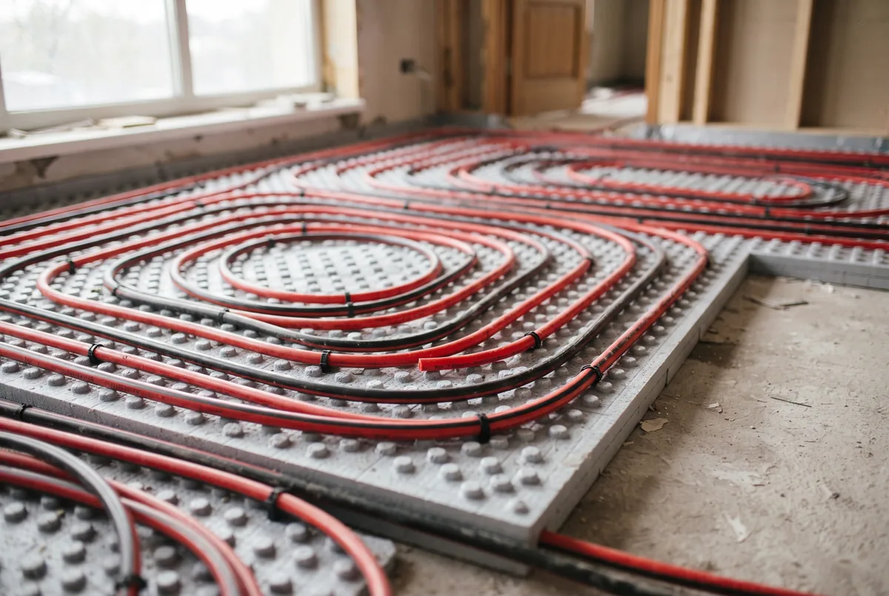
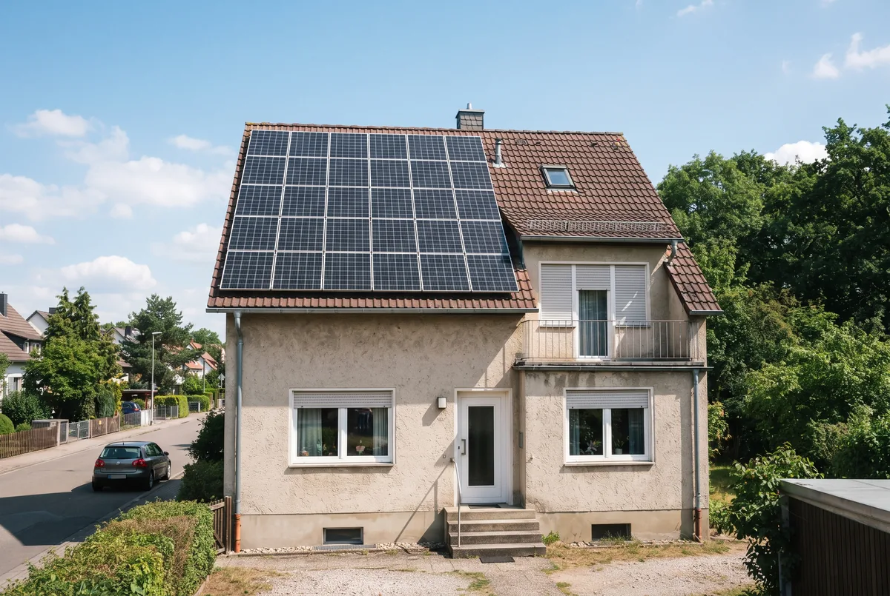

Inhaltsverzeichnis
- Kann Ihre Wärmepumpe im Sommer auch kühlen?
- Kurz erklärt – wie die Wärmepumpe kühlt
- Aktive Kühlung im Profil
- Passive Kühlung im Profil
- Aktiv gegen passiv – die Vergleichstabelle
- Voraussetzung Flächenheizung
- Taupunkt und Kondenswasser
- Kosten – Aufpreis, Nachrüstung, Strom
- Wärmepumpe gegen Klimaanlage
- Förderung und Kombination mit PV
- Fazit – für wen sich welche Kühlart lohnt
- Häufige Fragen
Das Wichtigste in Kürze
- Zwei Verfahren: Passive Kühlung (Natural Cooling) funktioniert nur mit Sole/Wasser- und Wasser/Wasser-Wärmepumpen; aktive Kühlung läuft über den umgekehrten Kältekreis und ist auch mit Luft/Wasser-Wärmepumpen möglich.
- Kein Ersatz für die Klimaanlage: Die Wärmepumpe temperiert sanft und entfeuchtet nicht aktiv. Die Absenkung liegt je nach Quelle, System und Gebäude grob zwischen 2–3 und 3–8 Grad.
- Voraussetzung Flächenheizung: Kühlen geht über Fußboden-, Wand- oder Deckenheizung sowie Gebläsekonvektoren. Klassische Heizkörper scheiden aus – zu kleine Fläche, Kondensatgefahr.
- Taupunkt ist der kritische Punkt: Die Vorlauftemperatur darf im Kühlbetrieb nicht unter den Taupunkt der Raumluft fallen, sonst bildet sich Kondenswasser; sie wird deshalb meist um 18 Grad gehalten. Ein Taupunktwächter regelt das.
- Stromkosten: Passive Kühlung ist sehr sparsam (grob 50–100 Euro pro Jahr fürs EFH), aktive Kühlung deutlich teurer (grob 300–600 Euro pro Saison) – alles Orientierungswerte mit großer Streuung.
- Förderung: Es gibt keine separate Förderung für die Kühlfunktion – gefördert wird nur die Wärmepumpe selbst über die KfW 458. Alle Förderangaben Stand 15. Juli 2026, ohne Gewähr – Details in der Hinweisbox am Ende.
Einleitung – Kann Ihre Wärmepumpe im Sommer auch kühlen?
Die kurze Antwort lautet: oft ja, aber nicht automatisch. Ob eine Wärmepumpe im Sommer kühlt, entscheidet sich an drei Faktoren – am Wärmepumpentyp, an der vorhandenen Wärmeübergabe im Gebäude und daran, ob die Anlage die Kühlfunktion technisch mitbringt. Ein Gerät, das nur zum Heizen ausgelegt ist, lässt sich nicht per Software zum Kühlen überreden. Umgekehrt bringt eine für den Kühlbetrieb vorbereitete Anlage einen Sommernutzen mit, der im Kaufpreis vieler Systeme fast unbemerkt mitläuft.
Wichtig ist die richtige Erwartung. Wer sich vom Umschalten in den Kühlmodus die Wucht eines Klimageräts verspricht, wird zunächst enttäuscht sein. Die Wärmepumpe nimmt der Wohnung die Spitzen der Hitze und hält ein angenehmes Grundniveau, sie erzeugt aber keinen kalten Luftzug und trocknet die Luft nicht aktiv. Genau in dieser sanften, leisen und effizienten Arbeitsweise liegt zugleich ihr großer Vorzug: Sie nutzt eine ohnehin vorhandene Anlage, arbeitet ohne störende Zugluft und verbraucht in der passiven Variante nur einen Bruchteil des Stroms einer Klimaanlage.
Für die Entscheidung sollten Sie deshalb zwei Fragen trennen. Erstens: Welches Kühlverfahren ist mit Ihrer Anlage überhaupt möglich – aktiv, passiv oder beides? Zweitens: Wie hoch ist Ihr tatsächlicher Kühlbedarf, und rechtfertigt er den Aufpreis oder den Mehrverbrauch? Dieser Beitrag geht beide Fragen der Reihe nach durch und stellt am Ende eine ehrliche Einordnung gegen die Klimaanlage. Wenn ohnehin ein Heizungstausch ansteht, lohnt es sich besonders, die Kühlfrage gleich mitzudenken – denn nachträglich wird sie im Bestand deutlich aufwendiger.
Kurz erklärt – wie die Wärmepumpe kühlt
Eine Wärmepumpe verschiebt Wärme von einem Ort zum anderen. Im Winter entzieht sie der Außenluft, dem Erdreich oder dem Grundwasser Wärme und hebt sie auf ein zum Heizen nutzbares Temperaturniveau. Beim Kühlen dreht sich die Richtung um: Nun wird dem Gebäude Wärme entzogen und nach draußen abgeführt. Wohin diese Wärme wandert und ob dafür der stromhungrige Verdichter arbeiten muss, unterscheidet die beiden Verfahren.
Bei der passiven Kühlung, oft „Natural Cooling" genannt, dient das kühle Erdreich oder das Grundwasser als Wärmesenke. Das Wasser der Flächenheizung gibt seine Wärme über einen Wärmetauscher an den kühlen Sole- oder Grundwasserkreis ab. Der Verdichter bleibt dabei weitgehend aus, es läuft im Wesentlichen nur die Umwälzpumpe. Das ist die energetisch sparsamste Form der Raumkühlung überhaupt – setzt aber eine Erdsonde, einen Erdkollektor oder einen Brunnen voraus.
Bei der aktiven Kühlung kehrt die Wärmepumpe ihren Kältekreis um und arbeitet im Prinzip wie ein Kühlschrank: Der Verdichter läuft, und die Anlage schafft die Wärme aktiv aus dem Gebäude. Dieses Verfahren beherrschen reversible Luft/Wasser-Wärmepumpen ebenso wie Sole/Wasser-Geräte. Die häufig zu lesende Behauptung, aktive Kühlung sei nur mit Luftwärmepumpen möglich, ist falsch und sollte Sie nicht in die Irre führen. Die aktive Kühlung liefert mehr und besser regelbare Kühlleistung, verbraucht dafür aber deutlich mehr Strom. In beiden Fällen gilt: Die kühle Fläche im Raum – meist der Fußboden – nimmt die Wärme der Raumluft auf und die Wärmepumpe transportiert sie ab.
Aktive Kühlung im Profil
Die aktive Kühlung nutzt denselben Kältekreisprozess wie der Heizbetrieb, nur in umgekehrter Richtung. Ein Umschaltventil dreht den Kreislauf, sodass der Verdichter dem Heizwasser Wärme entzieht und sie über den Außenwärmetauscher an die Umgebung abgibt. Das gekühlte Wasser fließt anschließend durch die Flächenheizung und nimmt dort die Raumwärme auf. Weil der Verdichter aktiv arbeitet, lässt sich die Kühlleistung gezielt regeln und auf ein niedrigeres Temperaturniveau bringen, als es die passive Variante schafft.
Der große Vorteil liegt in dieser Durchsetzungskraft. Selbst an heißen Tagen kann die aktive Kühlung ein spürbares Grundniveau an Behaglichkeit halten und reagiert schneller auf steigende Raumtemperaturen. Möglich ist sie sowohl mit Luft/Wasser- als auch mit Sole/Wasser-Wärmepumpen, sofern das Gerät als reversible Ausführung ausgelegt ist. Gerade bei Luft/Wasser-Anlagen, die in Neubau und Bestand am häufigsten verbaut werden, ist die aktive Kühlung damit die praktisch relevanteste Kühloption überhaupt.
Der Preis dafür ist der Stromverbrauch. Weil der Verdichter läuft, liegt die aktive Kühlung energetisch deutlich über der passiven – auch wenn sie im Vergleich zu einem mobilen Klimagerät noch günstig arbeitet. Ein zweiter Punkt betrifft die Regelung: Damit im Kühlbetrieb kein Kondenswasser entsteht, muss die Vorlauftemperatur sauber über dem Taupunkt gehalten werden. Aktiv gekühlte Anlagen brauchen dafür einen zuverlässigen Taupunktwächter, der die Kühlung bei zu hoher Raumluftfeuchte drosselt. Wer eine Luft/Wasser-Wärmepumpe plant und den Sommernutzen mitnehmen will, sollte die reversible Ausführung deshalb von Anfang an einplanen.
Unser Tipp: Luft-Luft vs. Luft-Wasser Wärmepumpe im Altbau: welcher Systemtyp zu Ihrem Gebäude passt – der Vergleich ordnet auch die Kühloptionen der beiden Bauarten ein.

Passive Kühlung im Profil
Die passive Kühlung, im Fachjargon Natural Cooling genannt, ist das energetisch eleganteste Verfahren – und zugleich das mit den engsten Voraussetzungen. Sie funktioniert ausschließlich mit Sole/Wasser- und Wasser/Wasser-Wärmepumpen, weil sie eine dauerhaft kühle natürliche Wärmesenke braucht. Das Erdreich in einigen Metern Tiefe und das Grundwasser halten übers Jahr eine weitgehend konstante Temperatur im Bereich von etwa 8 bis 12 Grad. Diese Kälte reicht aus, um dem Heizwasser der Flächenheizung im Sommer Wärme zu entziehen.
Der Clou: Der Verdichter, das energiehungrigste Bauteil, bleibt dabei weitgehend aus. Es läuft im Wesentlichen nur die Umwälzpumpe, die das Wasser zwischen Erdsonde beziehungsweise Brunnen und Flächenheizung im Kreis führt. Über einen Wärmetauscher gibt der Heizkreis seine aufgenommene Raumwärme an den kühlen Sole- oder Grundwasserkreis ab. Daraus ergibt sich ein sehr niedriger Stromverbrauch – passive Kühlung ist damit die sparsamste Form der Raumkühlung, die im Wohngebäude zur Verfügung steht.
Die Kehrseite ist die begrenzte Leistung. Weil die passive Kühlung allein von der natürlichen Temperaturdifferenz lebt, kann sie die Raumtemperatur nur moderat absenken. Als Orientierung nennen viele Quellen eine Absenkung im Bereich weniger Grad; die konkrete Wirkung hängt stark von Gebäude, Dämmung und Auslegung ab. An extremen Hitzetagen und in schlecht gedämmten Häusern stößt das Verfahren an seine Grenzen, weil der kühle Untergrund die anfallende Wärme nicht schnell genug aufnimmt. Für ein angenehmes Grundklima in einem gut gedämmten Haus ist die passive Kühlung dagegen ideal – sie arbeitet nahezu geräuschlos, praktisch nebenbei und zu Betriebskosten, die kaum ins Gewicht fallen. Wer ohnehin über eine Erdwärmepumpe nachdenkt, sollte die Natural-Cooling-Option deshalb unbedingt einplanen.
Aktiv gegen passiv – die Vergleichstabelle
Beide Verfahren haben ihre Berechtigung, sie lösen aber unterschiedliche Aufgaben. Die passive Kühlung punktet mit minimalen Betriebskosten und maximaler Effizienz, bleibt in der Leistung aber bescheiden und ist an eine Erdwärme- oder Grundwasseranlage gebunden. Die aktive Kühlung liefert mehr Kühlleistung und ist mit fast jeder reversiblen Wärmepumpe möglich, verbraucht dafür aber merklich mehr Strom. Die folgende Übersicht stellt die wichtigsten Kriterien nebeneinander.
| Kriterium | Aktive Kühlung | Passive Kühlung |
|---|---|---|
| Prinzip | Umgekehrter Kältekreis, Verdichter läuft | Natural Cooling, Verdichter weitgehend aus, nur Umwälzpumpe |
| Geeignete WP-Typen | Luft/Wasser- und Sole/Wasser-Wärmepumpen (reversibel) | Nur Sole/Wasser- und Wasser/Wasser-Wärmepumpen |
| Kühlleistung | Höher, gezielt regelbar | Moderat, von der natürlichen Temperaturdifferenz begrenzt |
| Effizienz / Stromverbrauch | Deutlich höherer Verbrauch, da Verdichter arbeitet | Sehr effizient, minimaler Strombedarf |
| Stromkosten (EFH-Orientierung) | Grob 300–600 € pro Saison | Grob 50–100 € pro Jahr |
| Aktive Entfeuchtung | Nein (sanfte Flächenkühlung, keine Klimaanlagen-Entfeuchtung) | Nein |
Die Werte sind Orientierungsgrößen mit erheblicher Streuung – die realen Kosten hängen von Anlage, Gebäude, Nutzung und Sommerverlauf ab. Eine belastbare Einordnung ergibt sich erst aus der konkreten Auslegung Ihres Gebäudes. Genau hier setzt eine Fachplanung an: Sie klärt, welches Verfahren mit Ihrer Anlage möglich ist und welchen Nutzen es realistisch bringt.
Soll Ihre neue Wärmepumpe im Sommer mitkühlen?
Wir prüfen, welches Kühlverfahren zu Ihrem Gebäude passt, übernehmen die raumweise Heizlastberechnung und prüfen Ihr Angebot vor der Unterschrift auf Förderfähigkeit.
Kostenlose ErsteinschätzungVoraussetzung Flächenheizung – warum Heizkörper ausscheiden
Kühlen mit der Wärmepumpe funktioniert nur, wenn im Gebäude eine große, kühle Fläche zur Verfügung steht, an der die warme Raumluft ihre Wärme abgeben kann. In der Praxis übernimmt das die Flächenheizung: Fußboden-, Wand- oder Deckenheizung. Statt im Winter das Wasser mit rund 30 bis 35 Grad in die Flächen zu schicken, läuft im Sommer gekühltes Wasser durch dieselben Rohre. Die großzügige Fläche sorgt dafür, dass schon eine geringe Temperaturdifferenz genügt, um dem Raum spürbar Wärme zu entziehen.
Alternativ eignen sich Gebläsekonvektoren (Fan Coils). Diese Geräte kombinieren einen wassergeführten Wärmetauscher mit einem Ventilator und geben die Kühlung aktiv an die Raumluft ab. Sie erreichen eine höhere und schnellere Kühlleistung als die stille Flächenkühlung, sind dafür aber hörbar und verbrauchen zusätzlichen Strom für das Gebläse. In einzelnen, besonders stark aufgeheizten Räumen können sie eine sinnvolle Ergänzung sein.
Klassische Heizkörper scheiden zum Kühlen aus, und zwar aus zwei Gründen. Erstens ist ihre Fläche viel zu klein: Ein Heizkörper ist darauf ausgelegt, mit hoher Vorlauftemperatur viel Wärme auf wenig Fläche abzugeben – zum Kühlen bräuchte er die umgekehrte Logik. Zweitens droht Kondensat: Weil das kalte Wasser sich auf eine kleine, kompakte Metallfläche konzentriert, würde deren Oberfläche schnell unter den Taupunkt fallen, und es bildete sich Tauwasser am Heizkörper und darunter. Deshalb ist eine Flächenheizung – oder ersatzweise ein für den Kühlbetrieb ausgelegter Gebläsekonvektor – die technische Grundbedingung für das Kühlen mit der Wärmepumpe. Im Neubau ist sie ohnehin Standard; im Bestand entscheidet sie mit darüber, ob sich der Kühlbetrieb überhaupt realisieren lässt.
Unser Tipp: Wärmepumpe im Altbau: wann sie sich rechnet und welches System passt – dort erfahren Sie, worauf es beim Verteilsystem im Bestand ankommt.
Taupunkt und Kondenswasser – der wichtigste Praxisaspekt
Der entscheidende Punkt beim Kühlen mit der Wärmepumpe ist unsichtbar, aber folgenreich: der Taupunkt. Er beschreibt jene Temperatur, bei der die Luft ihren Wasserdampf nicht mehr halten kann und Feuchtigkeit auskondensiert. Sinkt die Oberflächentemperatur einer gekühlten Fläche unter diesen Taupunkt, schlägt sich Wasser nieder – im Fußboden bedeutet das feuchte Stellen, im schlimmsten Fall Schäden am Bodenaufbau und ein Nährboden für Schimmel.
Wo der Taupunkt liegt, hängt von Raumtemperatur und Luftfeuchte ab. Bei 25 Grad Raumtemperatur und 55 Prozent relativer Luftfeuchte liegt er bei rund 15 Grad, bei höherer Feuchte entsprechend höher. In der Praxis hält man die Vorlauftemperatur im Kühlbetrieb deshalb sicherheitshalber im Bereich um 18 Grad und selten darunter – je nach Raumluftfeuchte. Damit erklärt sich auch die begrenzte Kühlleistung der Flächenkühlung: Man darf schlicht nicht beliebig kalt fahren.
Absichern lässt sich das über einen Taupunktwächter beziehungsweise einen Feuchtefühler. Diese Sensoren messen Temperatur und Luftfeuchte im Raum, berechnen daraus den aktuellen Taupunkt und heben die Vorlauftemperatur an oder drosseln die Kühlung, sobald es kritisch wird. Eine ordentlich geplante Kühlfunktion bringt eine solche Regelung serienmäßig mit – sie ist kein optionales Extra, sondern die Voraussetzung für einen schadensfreien Betrieb. Wichtig ist außerdem das Nutzerverhalten: Wer bei laufender Kühlung Fenster und Türen weit öffnet, holt feuchte Sommerluft herein, treibt den Taupunkt nach oben und zwingt die Regelung zum Abregeln. Kühlbetrieb funktioniert am besten bei geschlossenen Fenstern – ähnlich wie bei einer Klimaanlage. An diesem Detail entscheidet sich in der Praxis, ob die Kühlung zuverlässig und trocken arbeitet.
Kosten – Aufpreis, Nachrüstung, Stromkosten
Bei den Kosten lohnt es, zwischen drei Positionen zu unterscheiden: dem Aufpreis für die Kühlfunktion beim Neukauf, dem Aufwand einer Nachrüstung im Bestand und den laufenden Stromkosten im Betrieb. Vorweg der wichtigste Hinweis: Die folgenden Zahlen sind grobe Orientierungswerte für ein Einfamilienhaus mit erheblicher Schwankung je nach Anlage, Gebäude und Region – keine festen Zusagen.
Der Aufpreis für die Kühlfunktion beim Kauf einer neuen Wärmepumpe fällt oft moderat aus, weil viele reversible Geräte die Umschaltung bereits an Bord haben. Je nach Quelle und Ausstattung bewegt er sich grob im Bereich von etwa 1.000 bis 3.000 Euro, unter anderem für das Umschaltventil, die zusätzliche Regelung und den Taupunktwächter. Wer ohnehin eine Erd- oder Luftwärmepumpe anschafft, holt sich den Sommernutzen also vergleichsweise günstig mit ins Haus.
Die Nachrüstung im Bestand ist die aufwendigere Variante. Fehlt eine reversible Anlage oder eine geeignete Flächenheizung, kann die Ergänzung deutlich teurer werden – im Zweifel bis hin zu baulichen Eingriffen am Verteilsystem. Ob sich das rechnet, ist eine Einzelfallfrage, die von der vorhandenen Technik abhängt. Deshalb ist es sinnvoll, die Kühlfrage schon beim Heizungstausch mitzuentscheiden statt Jahre später nachzubessern.
Bei den Stromkosten ist der Abstand zwischen den Verfahren groß. Die passive Kühlung liegt fürs Einfamilienhaus je nach Quelle grob bei etwa 50 bis 100 Euro im Jahr, weil nur die Umwälzpumpe arbeitet. Die aktive Kühlung bewegt sich mit laufendem Verdichter grob zwischen 300 und 600 Euro pro Saison. Beides sind Näherungswerte; die reale Rechnung hängt an Nutzung, Strompreis und Sommer. Selbst die aktive Kühlung arbeitet dabei effizienter als ein mobiles Monoblock-Klimagerät, das die warme Abluft über einen Schlauch nach draußen führt und permanent warme Außenluft nachzieht.
Unser Tipp: Wärmepumpe im Altbau: Kosten und Förderung berechnen – hier ordnen wir die Gesamtinvestition und die Förderung Schritt für Schritt ein.
Wärmepumpe gegen Klimaanlage – der ehrliche Vergleich
Die naheliegende Frage lautet: Wenn die Wärmepumpe ohnehin kühlt, warum dann noch über eine Klimaanlage nachdenken? Die ehrliche Antwort ist, dass beide unterschiedliche Aufgaben lösen und keine der beiden in jeder Hinsicht überlegen ist. Wer das versteht, trifft die passende Entscheidung für sein Gebäude – statt der teuersten oder der stärksten.
Die Flächenkühlung über die Wärmepumpe spielt ihre Stärken beim Grundklima aus. Sie temperiert die Räume gleichmäßig und angenehm, arbeitet nahezu geräuschlos und ohne Zugluft und ist – besonders in der passiven Variante – hocheffizient. Sie nutzt eine ohnehin vorhandene Anlage mit und braucht keine zusätzlichen Innengeräte an der Wand. Ihre Grenzen sind ebenso klar: Sie senkt die Temperatur nur moderat, reagiert träge und entfeuchtet die Luft nicht aktiv. In einer schwülen Tropennacht bringt sie ein Schlafzimmer nicht auf Knopfdruck auf ein niedriges Niveau.
Die Klimaanlage, insbesondere ein fest installiertes Splitgerät, ist genau dort stark, wo die Flächenkühlung schwächelt. Sie kühlt einzelne Räume schnell und kräftig herunter, entzieht der Luft aktiv Feuchtigkeit und lässt sich gradgenau steuern. Der Preis dafür sind ein höherer Stromverbrauch, sichtbare Innengeräte, eine Außeneinheit an der Fassade – und damit in Mietwohnung oder Eigentümergemeinschaft der Bedarf einer Zustimmung. Ein mobiles Monoblock-Gerät wiederum ist ineffizient, weil es warme Außenluft nachzieht.
In vielen gut gedämmten Häusern ist die Reihenfolge deshalb entscheidend: Erst die Wärmepumpe für ein solides Grundklima nutzen, den baulichen Sommerhitzeschutz ausschöpfen – und nur dort, wo es wirklich nötig ist, gezielt mit einem Klimagerät ergänzen. Wer zuerst die Hülle in Ordnung bringt und die Flächenkühlung mitnimmt, braucht am Ende weniger und kleinere Kühltechnik.
Unser Tipp: Wohnung kühlen ohne Klimaanlage: alle Maßnahmen von 0 Euro bis Förderung – der Leitfaden zeigt, wie Sie die Hitze zuerst baulich draußen halten.
Förderung und Kombination mit Photovoltaik
Eine eigene Förderung für die Kühlfunktion gibt es nicht – das ist der wichtigste Satz zu diesem Thema. Der Staat bezuschusst die Wärmepumpe als Heizung im Rahmen des Heizungstauschs, nicht ihren Sommernutzen. Ob die geförderte Anlage zusätzlich kühlen kann, ist eine reine Ausstattungsfrage und ändert an der Förderhöhe nichts. Die Kühlfunktion kommt also gewissermaßen als geförderter Nebeneffekt mit, sofern Sie eine reversible Anlage wählen.
Gefördert wird die Wärmepumpe über die KfW-Heizungsförderung (Programm 458). Für Förderanträge ab dem 21. Juli 2026 gelten die reformierten Konditionen: 30 Prozent Grundförderung für alle, dazu für Selbstnutzer ein Klimageschwindigkeitsbonus von 16 Prozent und ein einkommensabhängiger Bonus von 40, 30 oder 10 Prozent, gestaffelt nach zu versteuerndem Haushaltseinkommen. Ein Familienzuschlag senkt das anzusetzende Einkommen bei mindestens einem minderjährigen Kind um einmalig 10.000 Euro. Die förderfähigen Kosten sind für die erste Wohneinheit auf 28.000 Euro begrenzt. Die Obergrenze der Förderquote liegt bei 80 Prozent, solange das anzusetzende zu versteuernde Haushaltsjahreseinkommen höchstens 30.000 Euro beträgt (mit mindestens einem minderjährigen Kind bis 40.000 Euro), darüber bei 70 Prozent. Welcher Wert für Ihr Vorhaben gilt, hängt am Antragsdatum – das prüfen wir individuell und tagesaktuell.
Besonders wirtschaftlich wird das Kühlen im Zusammenspiel mit einer Photovoltaikanlage. Der Grund ist ein glücklicher Zufall der Physik: Der größte Kühlbedarf entsteht an sonnigen, heißen Tagen – also genau dann, wenn die PV-Anlage am meisten Strom liefert. Kühlbedarf und Solarertrag laufen zeitlich zusammen. Damit lässt sich vor allem die stromintensivere aktive Kühlung im Sommer weitgehend mit selbst erzeugtem Solarstrom decken, und die laufenden Kosten sinken spürbar. Wer beides plant, sollte die Kombination von Anfang an mitdenken.

Fazit – für wen sich welche Kühlart lohnt
Ob und wie Ihre Wärmepumpe im Sommer kühlt, ist keine Frage des guten Willens, sondern der Technik. Die passive Kühlung ist die erste Wahl für alle, die ohnehin eine Sole/Wasser- oder Wasser/Wasser-Wärmepumpe planen oder betreiben: Sie liefert ein angenehmes Grundklima zu Betriebskosten, die kaum ins Gewicht fallen, und arbeitet nahezu geräuschlos nebenbei. Ihre Grenze ist die moderate Leistung – für den Hochsommer im schlecht gedämmten Haus reicht sie allein oft nicht.
Die aktive Kühlung ist die richtige Wahl, wenn mehr Kühlleistung gefragt ist oder wenn eine Luft/Wasser-Wärmepumpe zum Einsatz kommt, die passiv gar nicht kühlen kann. Sie setzt sich auch an heißen Tagen durch, verlangt dafür aber deutlich mehr Strom – ein Mehrverbrauch, der sich mit einer Photovoltaikanlage im Sommer gut abfedern lässt. In beiden Fällen bleibt die Wärmepumpe eine sanfte Temperierung, kein Entfeuchter und kein Ersatz für die kräftige, schnelle Kühlung eines Klimageräts.
Der sinnvolle nächste Schritt ist deshalb nicht die schnelle Kaufentscheidung, sondern die nüchterne Prüfung: Welches Verfahren ist mit Ihrer Anlage möglich, welche Wärmeübergabe ist im Gebäude vorhanden, und wie hoch ist Ihr tatsächlicher Kühlbedarf? Genau das schauen wir uns mit Ihnen an. EffiNova prüft Ihr Angebot vor der Vertragsunterschrift auf Förderfähigkeit und übernimmt bei der Wärmepumpe die raumweise Heizlastberechnung, damit die Anlage sauber ausgelegt ist – im Heiz- wie im Kühlbetrieb. So wird aus der Heizungsentscheidung zugleich eine durchdachte Antwort auf den nächsten heißen Sommer.
Häufige Fragen
Kann jede Wärmepumpe kühlen?
Nein. Kühlen kann eine Wärmepumpe nur, wenn sie dafür ausgelegt ist. Die passive Kühlung (Natural Cooling) ist ausschließlich mit Sole/Wasser- und Wasser/Wasser-Wärmepumpen möglich, weil sie das kühle Erdreich oder Grundwasser als Wärmesenke nutzen. Die aktive Kühlung über den umgekehrten Kältekreis beherrschen reversible Luft/Wasser-Wärmepumpen ebenso wie Sole/Wasser-Geräte – die verbreitete Aussage, aktive Kühlung sei nur mit Luftwärmepumpen möglich, stimmt nicht. Entscheidend ist, dass die Anlage die Kühlfunktion technisch mitbringt und dass im Gebäude eine geeignete Wärmeübergabe wie eine Flächenheizung vorhanden ist. Reine Heizgeräte ohne Kältekreis-Umkehr lassen sich nicht nachträglich zum Kühlen bewegen.
Um wie viel Grad kühlt eine Wärmepumpe?
Das lässt sich nicht pauschal beziffern, weil es an System, Gebäude und Außentemperatur hängt. Hersteller nennen für die sanfte Flächenkühlung häufig eine Absenkung von rund 2 bis 3 Grad, verschiedene Portale sprechen je nach Quelle und Anlage von 3 bis 8 Grad. Wichtig ist die Erwartungshaltung: Eine Wärmepumpe temperiert den Raum angenehm herunter, sie entfeuchtet die Luft aber nicht aktiv wie eine Klimaanlage und erzeugt keinen kühlen Luftzug. Aktive Kühlung liefert dabei mehr und besser regelbare Kühlleistung als passive Kühlung, verbraucht dafür aber deutlich mehr Strom. An extremen Hitzetagen stößt vor allem die passive Kühlung an ihre Grenzen.
Was kostet das Kühlen mit der Wärmepumpe im Sommer an Strom?
Die Spannen sind groß und hängen von Anlage, Gebäude, Nutzung und Sommerverlauf ab. Als grobe Orientierung für ein Einfamilienhaus liegen die jährlichen Stromkosten der passiven Kühlung oft im Bereich von etwa 50 bis 100 Euro, weil nur die Umwälzpumpe läuft und der Verdichter weitgehend aus bleibt. Die aktive Kühlung bewegt sich je nach Quelle grob zwischen 300 und 600 Euro pro Saison, weil der Verdichter arbeitet. Das sind Näherungswerte ohne Zusage. Wer eine Photovoltaikanlage betreibt, kann die aktive Kühlung im Sommer weitgehend mit selbst erzeugtem Strom decken, weil Kühlbedarf und Solarertrag zeitlich zusammenfallen.
Ersetzt eine Wärmepumpe die Klimaanlage?
In den meisten Fällen nicht vollständig. Eine wassergeführte Flächenkühlung über die Wärmepumpe temperiert die Räume sanft und gleichmäßig, sie entfeuchtet die Luft aber nicht aktiv und erreicht nicht die schnelle, kräftige Kühlung eines Klimageräts. Dafür arbeitet sie leise, ohne Zugluft und deutlich effizienter, und sie nutzt eine ohnehin vorhandene Anlage mit. Für ein angenehmes Grundniveau an heißen Tagen reicht das in gut gedämmten Gebäuden meist aus. Wer dagegen einzelne Räume schnell auf ein niedriges Niveau herunterkühlen oder aktiv entfeuchten möchte, etwa ein Schlafzimmer in Tropennächten, für den bleibt ein Klimagerät die durchsetzungsstärkere, aber stromhungrigere Lösung.
Wird die Kühlfunktion der Wärmepumpe gefördert?
Eine eigene Förderung nur für die Kühlfunktion gibt es nicht. Gefördert wird die Wärmepumpe als Heizung im Rahmen des Heizungstauschs über die KfW-Heizungsförderung (Programm 458). Für Anträge ab dem 21. Juli 2026 gelten die reformierten Konditionen: 30 Prozent Grundförderung, für Selbstnutzer ein Klimageschwindigkeitsbonus von 16 Prozent und ein einkommensabhängiger Bonus von 40, 30 oder 10 Prozent, gedeckelt bei 70 beziehungsweise 80 Prozent der förderfähigen Kosten. Ob die geförderte Anlage zusätzlich kühlen kann, ist eine reine Ausstattungsfrage und ändert an der Förderhöhe nichts. Welche Sätze für Ihr Vorhaben gelten, hängt am Antragsdatum – das prüfen wir individuell und tagesaktuell.
Stand der Angaben (15. Juli 2026): Bundestag und Bundesrat haben am 10. Juli 2026 das neue Gebäudemodernisierungsgesetz (GModG) beschlossen, und die reformierten KfW-Förderbedingungen gelten laut BMWE und KfW für neue Anträge ab dem 21. Juli 2026. Das Gesetz ist jedoch noch nicht verkündet und die geänderte Förderrichtlinie noch nicht im Bundesanzeiger veröffentlicht – alle Zahlen geben den aktuellen Stand des Wissens wieder, ohne Gewähr. Die Förderung steht außerdem unter dem Vorbehalt verfügbarer Bundesmittel; ein Rechtsanspruch besteht nicht. Auch die genannten Kosten- und Stromkostenangaben sind grobe Orientierungswerte mit großer Streuung, keine Zusagen. Welche Konditionen und welches Kühlverfahren für Ihr Vorhaben konkret gelten, prüfen wir gern tagesaktuell und individuell für Sie.